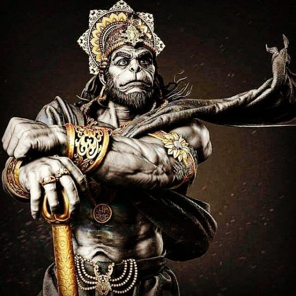

Hanuman is a god and a divine companion of Lord Rama and is a son of Lord Vayu.Hanuman could increase his strength,energy and size if needed. My superpower is my strength to adopt to the situations that I face in my life. I always find Hanuman as my Idol when ever I feel low I think about the situations that my idol goes through.
